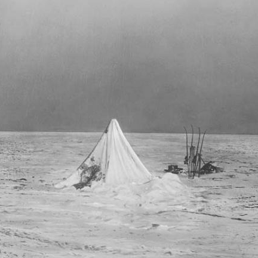

|
Untitled work - Cassie 2024 (short)   
The tent shutters about in the howling winds, it's brutally cold here. Even as we huddle together for warmth we still get none. Earlier me and Bower had tried to start a fire but the blizzard didn't allow for it, so now we are simply stuck here, no food, no fuel, nothing. I am afraid of what might come next, my fingers barely close anymore and I don't know how much longer I could possibly bear this. If we stay here, we are certaintly doomed, there is no doubt about that, so Scott decided to make the proposal to simply march towards the recent depot. It will be a natural death at least. Honestly at first I wanted to fight him over such an idea, but I had no will to yell and he was right... What else could we do? To-morrow we will set out. I don't think I'm coming back from this one anymore, the cold abyss awaits me now. I believe this is farewell. |

|